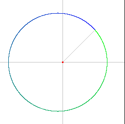

KeplerPolarForm.h
The red dot represents the Sun. The elliptical path is the orbit of the Earth around the Sun. The sun is at a focal point of the ellipse (not at the center of the ellipse). The orbit starts in green, finishes in blue, and is a blend of the two colors between.
|  |